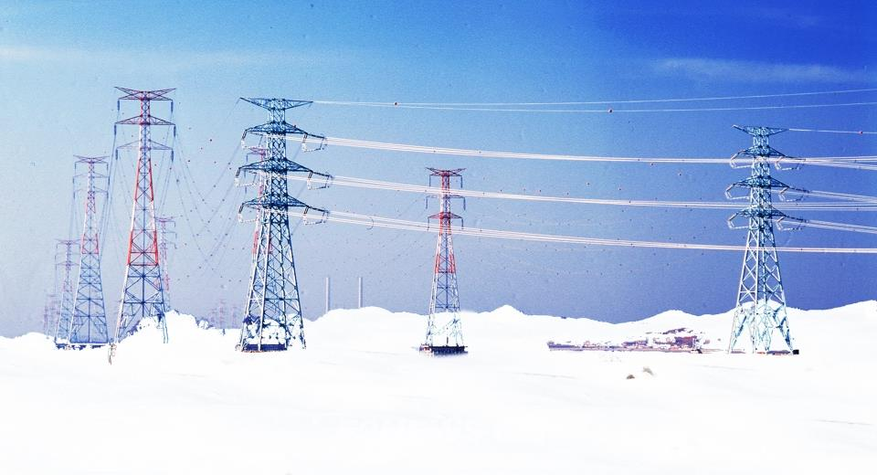

냉대기후 맞춤형 도시 인프라(2)
냉대기후
기상정보
냉대기후 맞춤형
도시 인프라(1)
냉대기후 맞춤형
도시 인프라(2)

원인: 혹한기에서도 원활한 통신을 위해
-> 통신 타워, 케이블 및 장비의 내구성을 높이는 기술적 개선 필요
내식성 및 내부식성 재료: 통신 타워와 케이블에 사용되는 재료는
외부 환경으로부터 보호해야 함.
ex. 내식성이 뛰어난 합금강이나 독립적인 부식 방지 코팅을 적용함
-> 장비의 수명을 연장